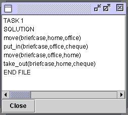

Steps to go
select "Forward" planner from the pull-down list.
Figure 1 Select an algorithm
Select task 1 from the GIPO Query window (Figure 2). After "OK" button has been clicked, a planning result will be shown as in Figure 3.
To view the result vividly, an animator is operational.
Figure 2 Select a task

Figure 3 Planning result